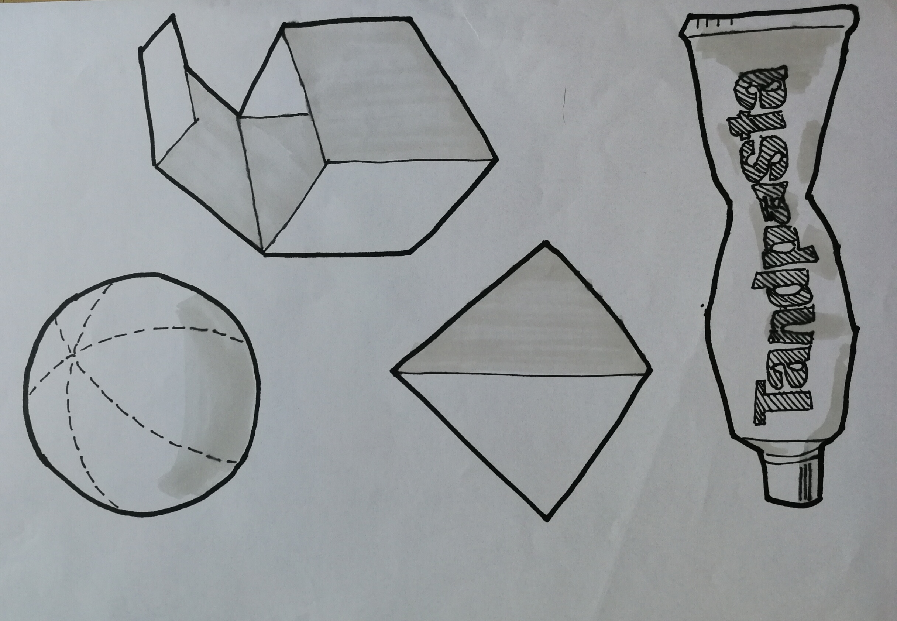
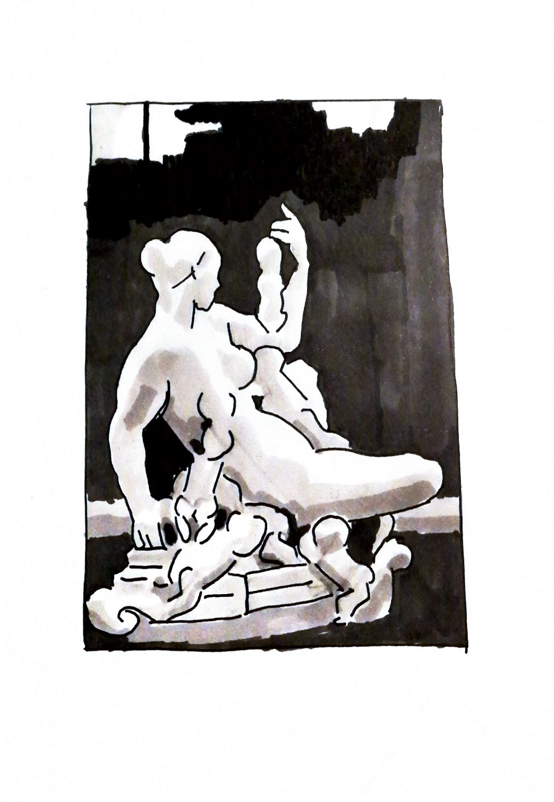
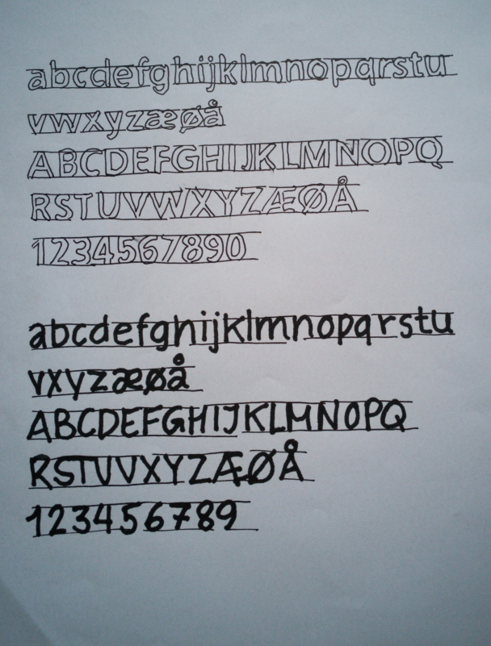
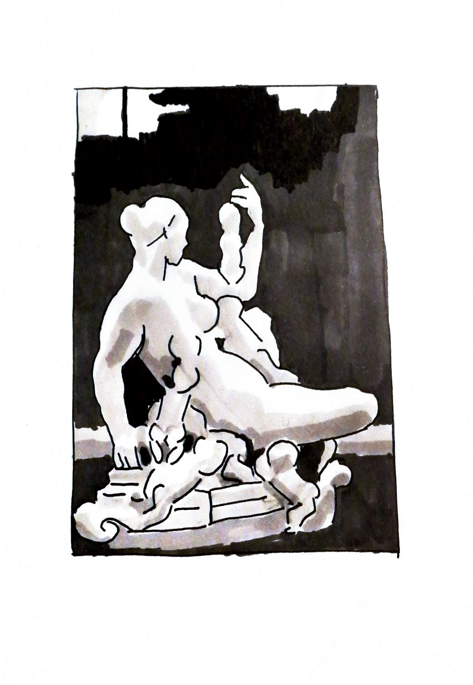
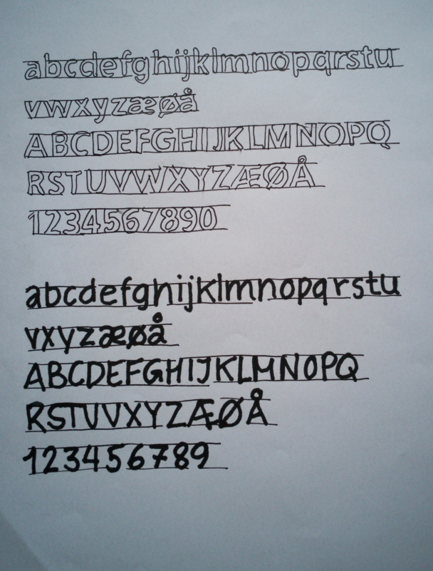

Visualiseringsværktøj
Rough Sketcing
Roug sketching er når man fortager et grov udkast af sit produkt.
Det kommer i 3 niveauer, den første er Rough, hvor der ikke forekommer nogle detaljer men man får ideen af hvordan produktet skal se ud.
Den næste er Layout, hvor der er flere detaljer med, man viser hvilken størrelse teksten skal have og placeres hvor den skal være i det færdige produkt.
Her er størrelser, farver, tekst og beskæring den som skal være ved det færdige produkt.
Så kunden kan danne sig et konkret overblik over slut produktet.
Den sidste er finish-layout.
Det vil sige her vises den rigtige tekst, de rigtige billeder, og farverne er som de skal være.
Materialer
Når man skal lave Rough Sketching skal man bruge nogle bestemte materialer.
Papir:
Markørblok: papiret er gennemsigtigt, så man kan se billedet/motivet under papiret.
Markørpapiret har på bagsiden et tyndt plastikbeslag, så tuschen ikke trænger igennem.
Tuscher:
AD markers filtspids er flade og skrå, man kan tegne både brede og smalle streger.
Penol 700 til mellemtykke streger
pilot SC UF til de tynde streger
Pilot 1300 til endnu tyndere streger.
Blyant til tynde, svage streger
Lineal
Light tablet.
Øvelser
 


